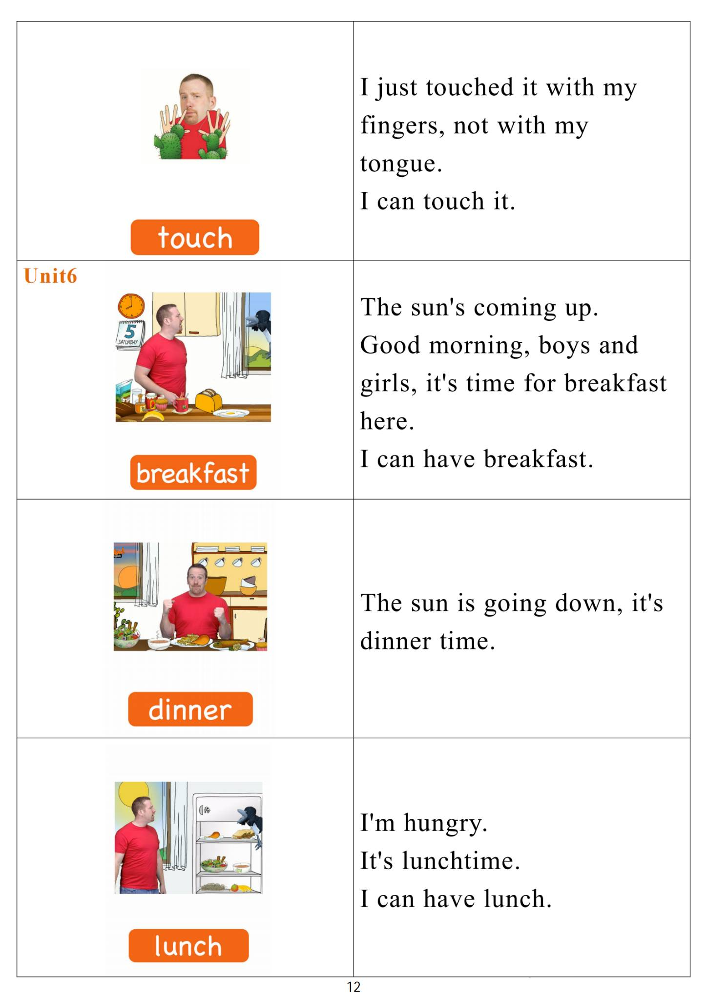

Day 11
Unit 4 · story
教材重点
网盘未提供逐日打卡原图；本级教材文件为“5.第五级单词卡.pdf”，以下重点结合单词卡与台词本整理，原文请看 Part 3。
Unit 4 · story · 7–8岁
look · bike · car · hello
Hello, hello, my name's Steve.
台词本为机器转写，可能存在识别误差；不等同于视频逐字原声。
详细内容
Part 1 核心词汇
必须掌握 · 4 个查看橙色每日打卡 Day 11 原图

Part 2 跟读句型与句型拓展
左侧保留台词本原句，右侧为替换练习；拓展内容不是视频逐字台词。
Hello, hello, my name's Steve.
Hello, hello, it's time to play. It's time to play in English.
Bike helicopter.
Inline skates and skateboard. No. Maggie.
My skateboard is faster than your inline skates. No, it isn't.
Part 3 台词本全文
来源：第5级台词本 · 011.Wow!Orange - Unit 4 story_4_1b.pdf。以下保留网盘 PDF 的机器转写文本，仅清理了文件路径页眉和空行。
Hello, hello, my name's Steve.
Hello, hello, it's time to play. It's time to play in English.
Bike helicopter.
Call.
Inline skates and skateboard. No. Maggie.
My skateboard is faster than your inline skates. No, it isn't.
Mike, inline skates are faster, no, maggie, my skateboard is faster, my goodline skate, no mice
skateboard.
It's faster than your in line skates. No.
Look, there's my skateboard, and there are your inline skates. Let's have a race, okay?
Oh, hey, hello, boys and girls, me and Maggie are going to have a race, I think my skateboard is faster.
Than hurt in line skates.
Look, there's a skateboard, say it with me, but be fast, are you ready? Look, there's a skateboard.
And again, are you ready There's a skateboard, and look, there are Maggies in line states, say with me,
but be slow.
There are inline skates for Maggie, and again there are inline skates, maggie, oh, and what's there.
There's a skateboard, yeah, what's there. There are inline skates, yea, come on in, let's write sites.
Okay, maggie, it's my.
Fast skateboard against your slow inline skates. Ready.
Steady go.
MR,
Faster, I'm faster than Maggie, oh, no, look, look, there's a puddle.
Oh no, I'm getting slower.
Slower and slower. Oh, look.
She's faster than me.
Hey, what's that?
There's a bike, it's fast.
So say it with me and be fast, I ready, there's a bike, and again, there's a bike, and again, there's a bike.
HA, ha,
God.
Maggie.
I'm on a bike, yeah, I'm faster than you see you later.
/
-
/5/011.Wow!Orange - Unit 4 story_4_1b.txt[2022/3/29
星期二
6:51:49]
Hey,
Look, I'm on a bike, yeah, it's a really fast bike.
Maggie will never catch me Now, no.
Hey, what's that? Oh, look, there's a.
Hey, look, there's a car, same with me, there's a car, and again, there's a car.
It's Maggie, maggie's in the car.
Oh, she is faster than me now, oh, hey,
What's faster than a car? Hmm, what's faster than a car?
My car is faster than stays bike.
HA,
Hello, maggie, look, I'm in a helicopter.
My helicopter is faster than your car. See you later.
I mean, a helicopter.
Great, it's really fast, so hey, let's go.
And faster and faster and faster.
The first stop, oh, oh no, oh,
I'm going to crash, oh,
Ooh.
Hey, I'm the winner here, I'm faster than Maggie, I'm faster than.
Anybody.
Oh, wait a minute. Where am I.
Oh, it's really cold here, ooh, I want to go home. At least there's a helicopter.
Helicopter.
There isn't a helicopter.
Say it with me, there isn't a helicopter, there isn't a helicopter, there isn't a helicopter, there isn't a.
Oh my dear.
e